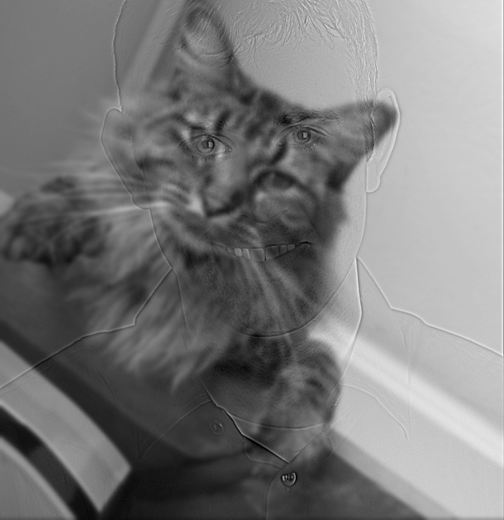
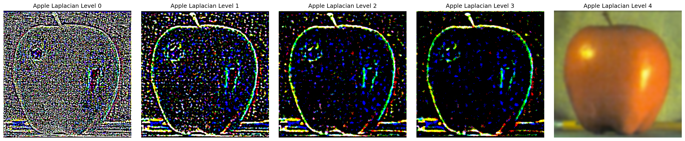

Part 1: Fun with Filters
This section explores 2D convolutions, edge detection, and filtering techniques using finite difference operators and Gaussian filters.
Part 1.1: Convolutions from Scratch
Implemented convolution with both 4 nested loops and 2 nested loops (vectorized), including zero padding. Compared with scipy.signal.convolve2d for validation.
Implementation Details
4-Loop Convolution Implementation
2-Loop Convolution Implementation
Box Filter and Finite Difference Operators Code
Box Filter Results
Box Filter - 2 Loops Implementation (Used for Results)
Box Filter - Scipy Implementation (Comparison)
Runtime Comparison: The 2-loop implementation is faster than the 4-loop version due to vectorized operations (and I assume further optimization done for computationally expensive operations). Scipy's implementation is the fastest as it's highly optimized in C.
Part 1.2: Finite Difference Operator
Computed partial derivatives in x and y directions using finite difference operators, then calculated gradient magnitude and created binary edge images. This section demonstrates the fundamental concept of edge detection through gradient analysis.
Mathematical Foundation
The finite difference operators approximate the partial derivatives of the image:
- Dx = [-1, 1]: Detects horizontal edges (vertical gradients)
- Dy = [-1; 1]: Detects vertical edges (horizontal gradients)
- Gradient Magnitude = √(Ix² + Iy²): Combines both directions for edge strength
Cameraman Image Results
Cameraman: Original → Ix (Horizontal Edges) → Iy (Vertical Edges) → Clear Edge Image (threshold=54)
Analysis of Results:
- Ix (Horizontal Edges): Shows vertical lines like the camera strap, building edges, and vertical structures
- Iy (Vertical Edges): Shows horizontal lines like the horizon, building tops, and horizontal features
- Clear Edge Image: Binary edge detection with threshold=54, showing crisp white edges against black background
Edge Detection Results
To turn the gradient magnitude into an edge image, we binarize it by picking an appropriate threshold to suppress noise while showing all real edges:
Cameraman Edge Detection: Threshold 5 → Threshold 10 → Threshold 30 → Threshold 40 → Threshold 54
Key Observations:
- The cameraman's silhouette is clearly defined
- Building edges and architectural features are well-preserved
- Background details are appropriately filtered out
- Edge connectivity is maintained for object recognition
Part 1.3: Derivative of Gaussian (DoG) Filter
The results from Part 1.2 using just finite difference operators were rather noisy. We can improve this by first applying Gaussian smoothing to reduce noise, then computing gradients. Even better, we can create Derivative of Gaussian (DoG) filters that combine both operations into a single convolution.
Two-Step Approach: Gaussian Smoothing + Finite Differences
First, let's apply Gaussian smoothing to the cameraman image, then compute gradients:
Cameraman: Original → Gaussian Blurred → Edge Image (Original) → Edge Image (After Gaussian)
Key Differences Observed:
- Noise Reduction: Gaussian smoothing significantly reduces high-frequency noise
- Smoother Gradients: Edge responses are more coherent and less fragmented
- Better Edge Quality: Edges are cleaner and more continuous
- Reduced Artifacts: Fewer spurious edge detections
DoG Filter Construction
Instead of two separate convolutions, we can create DoG filters by convolving the Gaussian with finite difference operators:
def create_dog_filters(size, sigma):
"""Create Derivative of Gaussian filters"""
# Create Gaussian kernel
gaussian = create_gaussian_kernel(size, sigma)
# Create finite difference operators
Dx = np.array([[-1, 1]]) # Horizontal gradient
Dy = np.array([[-1], [1]]) # Vertical gradient
# Create DoG filters by convolving Gaussian with difference operators
dog_x = signal.convolve2d(gaussian, Dx, mode='same')
dog_y = signal.convolve2d(gaussian, Dy, mode='same')
return dog_x, dog_y, gaussian
DoG Filter Visualization
The DoG filters are created by convolving the Gaussian filter with the finite difference operators:
DoG Filters: Gaussian Filter → DoG X = Gaussian ⊗ D_x → DoG Y = Gaussian ⊗ D_y
Mathematical Process:
- DoG X: Convolution of Gaussian filter with D_x = [-1, 1]
- DoG Y: Convolution of Gaussian filter with D_y = [-1; 1]
- Result: Single filters that combine smoothing and differentiation
Verification: DoG vs Two-Step Method
We verify that applying DoG filters directly gives the same result as Gaussian smoothing followed by finite differences:
DoG Verification: Original → Two-Step (Gaussian + Gradients) → DoG (Single Convolution) → Difference (Should be ~0)
Key Insights:
- Gaussian smoothing is essential for noise reduction in edge detection
- DoG filters provide computational efficiency without sacrificing quality
- Single convolution approach is mathematically equivalent to two-step method
- Edge quality is significantly improved compared to direct finite differences
Part 2: Fun with Frequencies
This section explores frequency domain techniques including image sharpening, hybrid images, and multi-resolution blending.
Part 2.1: Image Sharpening
Image sharpening enhances high-frequency details to make images appear crisper. We use the unsharp masking technique, which combines the original image with high-frequency components extracted by subtracting a blurred version.
Unsharp Masking Theory
The unsharp mask filter works by:
- Step 1: Apply Gaussian blur (low-pass filter) to remove high frequencies
- Step 2: Extract high frequencies: High_freq = Original - Blurred
- Step 3: Add amplified high frequencies: Sharpened = Original + amount × High_freq
- Single operation: This can be combined into one convolution: (1 + amount) × δ - amount × Gaussian
Implementation Note: Our implementation uses the single convolution approach for efficiency. The unsharp mask filter is created as: unsharp_filter = (1 + amount) * delta - amount * gaussian, where delta is the identity filter. This combines all three steps into a single convolution operation.
Complete Process: Taj Mahal Image
Demonstrating the full unsharp masking process on the Taj Mahal image:
Complete Unsharp Masking Process: Original → Blurred → High Frequencies → Sharpened
Sharpening Amount Variations
Demonstrating how varying the sharpening amount changes the result:
Conservative (amount=0.3)
Evaluation: Blur and Re-sharpen Test
For evaluation, we take a sharp image, blur it artificially, then sharpen it back to compare with the original. This is near Antelope Canyon in Arizona:
Original Sharp Image (Antelope Canyon, Arizona) → Artificially Blurred → Sharpened Back
Observations:
- High-frequency recovery: The sharpening process successfully recovers most fine details
- Edge enhancement: Edges become more pronounced and defined
- Noise amplification: Some noise may be amplified along with details
- Parameter sensitivity: Amount parameter significantly affects the final result
Parameter Analysis
Key Parameters:
- Sigma (σ): Controls blur extent - lower values preserve more detail, higher values smooth more
- Amount: Controls sharpening strength - higher values increase contrast and edge definition
- Optimal Range: σ=0.5-1.0, amount=0.3-0.8 for natural-looking results
- Trade-offs: Higher amounts enhance details but may introduce artifacts
Part 2.2: Hybrid Images
Hybrid images combine high-frequency components from one image with low-frequency components from another, creating images that change interpretation with viewing distance.
I definitely would have prefered to have a better alignment of the images, but I was having issues with manually aligning the images, so these results are currently the best I could do.
Hybrid Image Theory
The hybrid image combines:
- High frequencies: Image A - Gaussian_blur(Image A)
- Low frequencies: Gaussian_blur(Image B)
- Hybrid: High_freq_A + Low_freq_B
Derek + Nutmeg Hybrid

Hybrid Image (Grayscale)
Hybrid Creation Process
Complete Process: Derek → Nutmeg → Hybrid (Grayscale) → Hybrid (Color)
Elon Musk + Zuckerberg Hybrid
Selfie + Timothy Hybrid
Viewing Instructions:
- Close viewing: See high-frequency details (first person's features)
- Distant viewing: See low-frequency shapes (second person's features)
- Alignment: Images aligned using starter code automatic alignment
- Cutoff frequencies: σ₁=2.0 for high-pass, σ₂=3.0 for low-pass
- Frequency analysis: Shows how high and low frequencies are combined in the hybrid
Part 2.3: Gaussian and Laplacian Stacks
Multi-resolution analysis using Gaussian and Laplacian stacks for image blending applications.
Orange Image Analysis
Orange Gaussian Stack (Levels 0-4): Progressive blurring
Orange Laplacian Stack (Levels 0-4): Frequency band differences
Apple Image Analysis
Apple Gaussian Stack (Levels 0-4): Progressive blurring

Apple Laplacian Stack (Levels 0-4): Frequency band differences
Stack Analysis:
- Gaussian Stack: Each level shows the image with increasing blur, capturing different frequency scales
- Laplacian Stack: Each level shows the difference between consecutive Gaussian levels, highlighting specific frequency bands
- Level 0: Highest frequencies (fine details, edges, texture)
- Level 4: Lowest frequencies (overall shape, large-scale features)
- Applications: Multi-resolution blending, image compression, edge detection
Part 2.4: Multiresolution Blending
Vertical Seam Blending
Vertical Seam Blending - transiiton bewteen images using our previous implementations! we finally can generate our weird fruit hybrid oraple.
Blending Process:
- Gaussian mask: Smooth transition weights
- Multi-level blending: Blend at each frequency band
- Reconstruction: Sum all Laplacian levels
- Result: Seamless, natural-looking blend